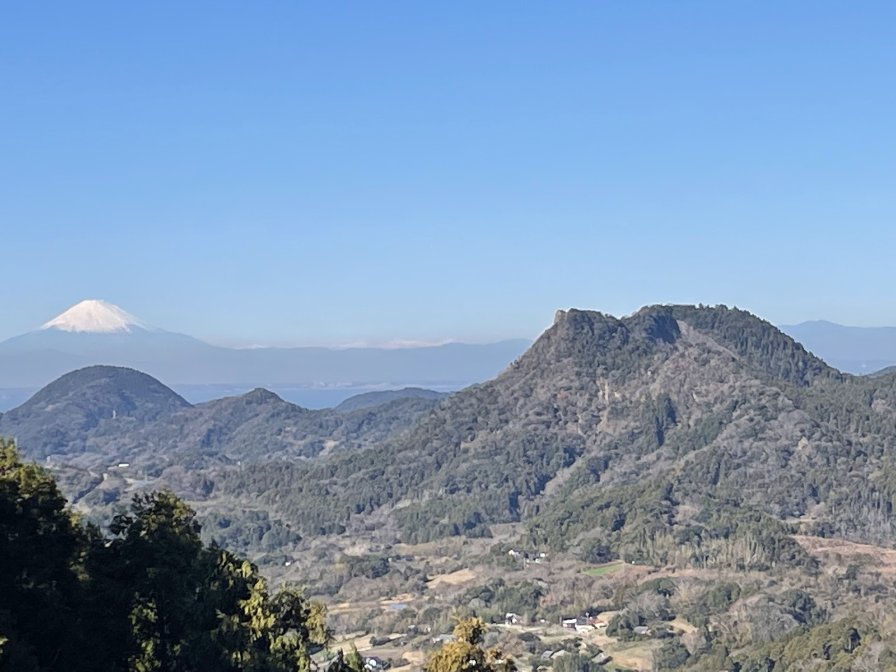
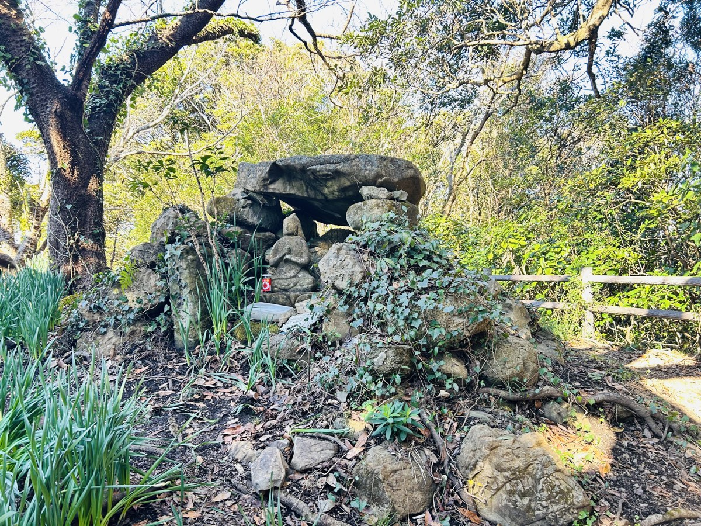
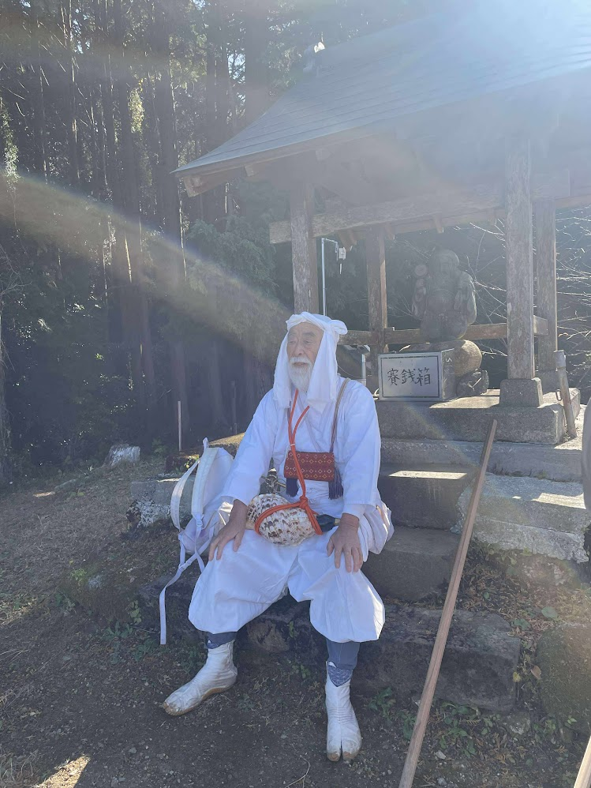

今年、二年目を迎える安房山伏修行です。
これまで多くの方がお山に入り、祈りを重ねてくださいました。
その祈りは、土地に、人に、少しずつ伝わっているのだと感じています。
今年も参加者の皆さんとともに、お山に入らせていただきます。
「千葉に山があるの？」
そんなふうに聞かれることがよくあります。
千葉のお山は、標高300メートルほど、あるいはそれより低いお山がほとんどです。
けれど、修行の場となるお山には低山も多く、その高さは関係ありません。

今回歩くのは、御殿山・鷹取山・宝篋印塔山・大日山の四つの峰。
房総には、古くから修験者（山伏）たちが山をめぐって修行していた伝承が残っています。
御殿山や鷹取山にも、岩場で祈りを捧げた跡や、護摩の行をしたとされる話があります。

かつて、このお山を歩き、祈った人たちがいた。
そして今、私たちもまた、お山を歩きます。
私たち「出羽三山千の葉講」は、南房総の風土やお山に魅せられ、地域とつながり、自然の中で祈り、学び、貢献することを活動の軸としています。
また、羽黒派古修験道・出羽三山とのご縁を通じ、お山での学びを里で実践することも大切にしています。
先達には、今年も羽黒山伏最高位既修松聖・星野文紘先達をお迎えします。
安房山伏修行では、出羽三山・大聖坊で行われている修行の流れを汲み、山伏の作法に基づきながら、南房総のお山をめぐります。
山伏修行が初めての方にもご参加いただける、一日のお行です。
先達

星野文紘
（ほしの ふみひろ）
- 羽黒山伏（山伏名:尚文）
- 山形県出羽三山 羽黒山宿坊「大聖坊」第十三代当主
- 出羽三山の最高の修行である「冬の峰百日行」の松聖を務める
詳細
集合時間
12月5日（土）8:50（時間厳守）
集合場所
御殿山駐車場 千葉県南房総市山田1162-1（トイレ有り）
◎マイカーの方へ：集合時間と場所が異なります！
マイカー集合時間：8:20
マイカー集合場所：大日山遊歩道駐車場 千葉県南房総市増間520（トイレ有り）
＊車の方は下山口集合です。車は下山口に置き、登拝の出発点となる御殿山までマイクロバスで移動します。
＊下山後、直会会場までご参加の方の同乗をご協力いただく場合がございます。
アクセス
※注：下線部の「市営バス富山線」は予約が必要です。申込フォームの交通手段で、電車・高速バスを選択された方は市営バスを利用されるものとして、主催者が取りまとめて人数分予約します。時刻表は10月現在のものです。
行終了時間
16:00頃 予定
（その後温泉と直会）
直会（なおらい）
※直会までが参加費に含まれています
時間：18:00開始（20:00終了予定）
場所：南総城山温泉 里見の湯 千葉県館山市下真倉305-1
https://www.satominoyu.com/
※宿泊施設はありません
◎直会終了後、館山駅もしくは館山駅周辺のホテルに送迎が可能です（要事前申請）
直会とは・・・・
お行が終わったあと、参加者と和やかに食事を共にすることです。
定員・参加料
定員：25名
参加料：17,000円（税込）※事前振込
・参加料に含まれるもの：修行参加費、マイクロバス代、直会費、直会会場での入浴料、レジャー保険、修行における備品使用（金剛杖、宝冠、注連など）
・参加料に含まれないもの：行中の昼食（おにぎり一つのみ持参してください）、現地までの交通費(市営バス代200円含む)、直会時の追加飲み物代、宿泊代
修行時の食事について
おにぎり一つのみご持参ください（周辺には購入できる店はないのでご注意ください）
キャンセル料
※行前日(12/4)から起算します
- 14日前〜9日前20％
- 8日〜3日前30％
- 2日前～当日100%
※14日を過ぎてのキャンセル返金につきましては、キャンセル料と振込手数料を引いた額を後日銀行振込にて返金いたします。
参加にあたってご確認いただきたいこと
- 一般的な登山ができる方が対象です（約4〜5時間の山歩きを致します）
- 未成年の方は保護者の同意書が必要です
- 通院中の方は主治医の了承を得たうえでご参加ください
- 健康面に不安のある方、既往症のある方は事前にご相談ください
- 天候、諸事情等により、行程変更や中止となる場合があります
- 写真撮影を予定しています（SNS等での公開を希望されない方は、申込フォーム内の不可にチェックをお願いします）
- 遅刻された場合は参加できないことがあります。時間に余裕をもってお越しください
必携品
- 登山に適した動きやすい服装（できれば白っぽいもの、なくても可）
- 地下足袋や登山靴（履きなれたもの。雨で滑ることがあります。祭り用地下足袋は不適）
- 雨具（上下が分かれているもの。傘やポンチョは不適）
- リュック（両手が使える様。色の指定はありません）
- 軍手
- 防寒用衣類（千葉でも日陰や夕方近くは肌寒いことがあります）
- 飲み物（ペットボトルや水筒。最低500㎖一本。天候による）
- 昼食時のおにぎり一つ
- 日焼け止め、虫よけ（必要な方）
- 着替え（行後に温泉に行くため）
※行に関係ないものは、車に置くことができます。
行中に持ち込み禁止
嗜好品、カメラ、録音機器、ラジオ、携帯電話その他これに類するもの。
12/5宿泊について
宿泊をご希望の方は、各自でご手配をお願いいたします。
近隣の宿泊施設をまとめたリストをご案内いたしますので、そちらをご参照ください。
なお、直会会場での宿泊はできません。
閉店時間までは、そのまま館内でお過ごしいただけます。
12/6安房神社・洲崎神社参拝のご案内（希望者のみ）
12月6日午前中には、安房神社・洲崎神社を参拝します。
星野先達にご帯同いただく予定です。
参加をご希望される方は申込フォームにチェックをお願いします。
参加料：ドネーション（寄付・投げ銭）制
※当日、千の葉講スタッフへお渡しください
予定概略：安房神社（9：30頃）～洲崎神社～昼食後解散
※内容や予定は予告なく変更になる場合があります
申込フォーム
ご質問やお申し込みはお気軽にどうぞ。
ともに、安房のお山と祈りの道を歩めることを楽しみにしています。